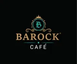

The Official BAROCK Collection
Nineteen pages of coffee, cuisine, and ceremony, presented exactly as composed by BAROCK CAFÉ.
Read the complete official menu PDF
House 9/B, Road 51/53, Gulshan-02, Dhaka -1212 · 01351943077 · Daily: 8:00 AM - 2:00 AM